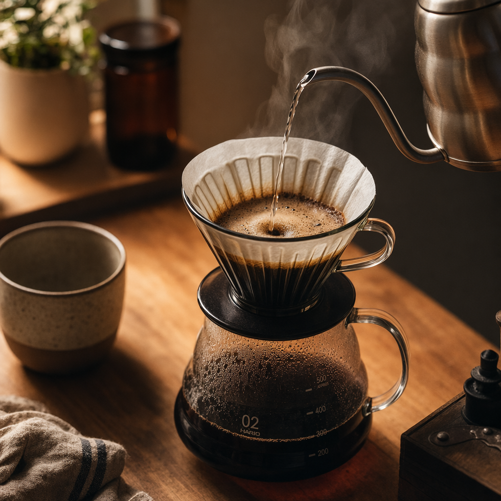
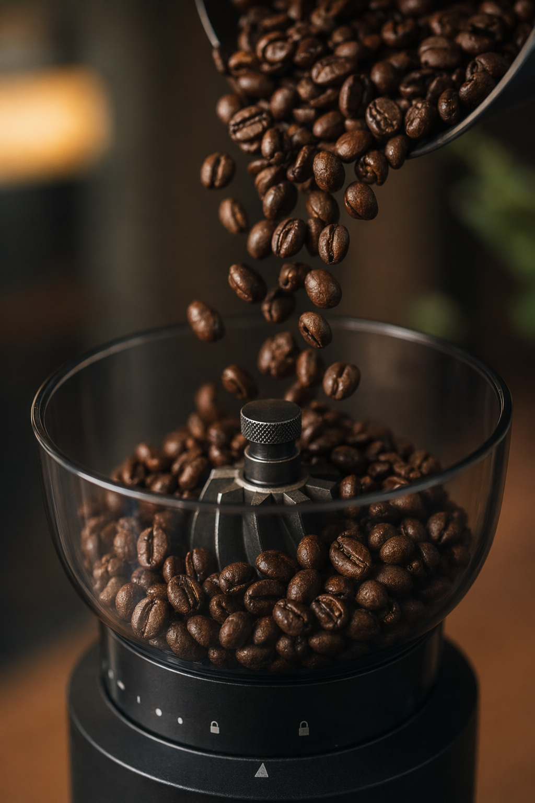
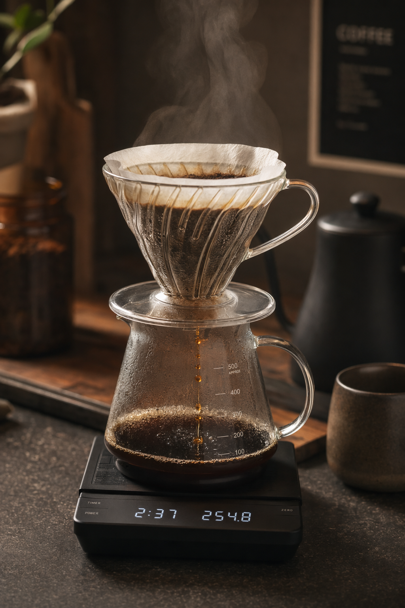
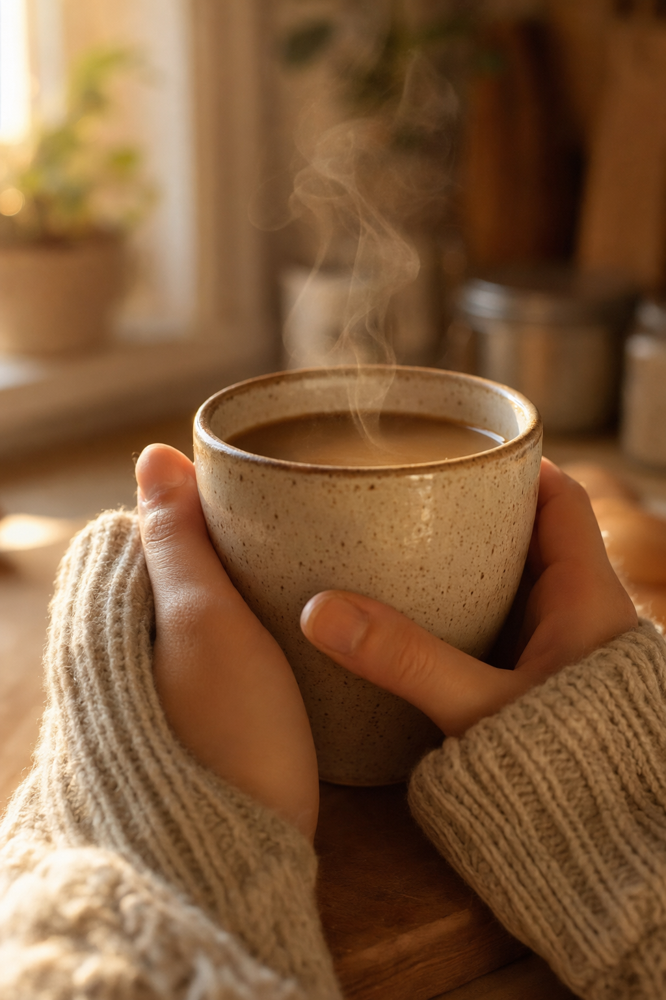

Brewfolk
Brewfolk01 / 05
Home Barista Rituals
Five small habits that turn your kitchen counter into a proper coffee bar.

Brewfolk02 / 05
Home Barista Rituals
Grind Right Before You Brew

- Grind only the beans you'll brew today.
- A burr grinder keeps every particle even.
- Match the grind size to your brew method.
Brewfolk03 / 05
Home Barista Rituals
Weigh Your Water, Not Just Your Beans

- Start with a 1:16 coffee-to-water ratio.
- Time your pour, don't just eyeball it.
- Write down what worked and repeat it.
Brewfolk04 / 05
Home Barista Rituals
Warm The Cup Before You Pour

- Rinse the mug with hot water first.
- Preheat your dripper or press too.
- Serve right away, coffee cools fast.
Brewfolk05 / 05
Home Barista Rituals
Sit With The First Sip Before You Scroll
- No screens for the first three sips.
- Notice the aroma before you drink.
- Let the ritual end the rush, not start it.